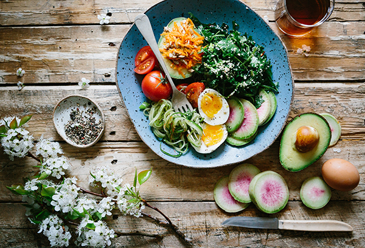

Limonade de Coco
10 min
- Lait de coco: 400ml
- Jus de citron: 2
- Crème de coco: 4 cuillères
- Sucre: 20g
- Glaçons: 2
Mettre les glaçons à votre goût dans le blender, ajouter le lait, la crème de coco, le jus de 2 citrons et le sucre. Mixer jusqu'à avoir la consistence désirée.